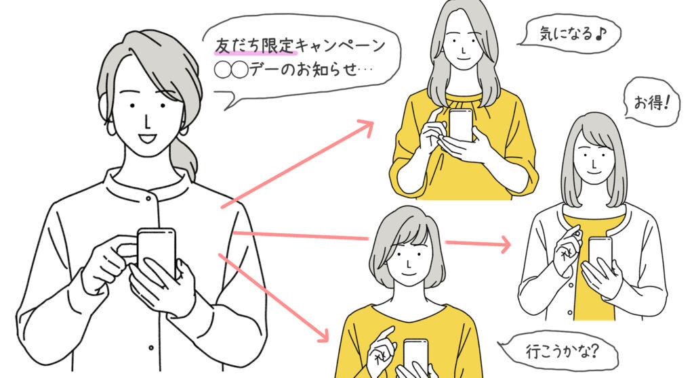

#037_成約率アップの秘訣！

こんにちは！matsumotoです。本日は、LINE公式アカウントを運営する人ならではの重大なお悩み事について、一緒に考えていきましょう。
LINE公式アカウントを開設するにあたり、皆さんまず一番最初に意識するのが「どうすれば大勢の人に友だち登録してもらえるだろうか？」ということでしょう。
とにかく、友だち数が欲しい！100人欲しい、いやもっと欲しい、大勢友だち登録してくれさえすれば、あんなことやこんなこと全部できる…！毎日でも情報を発信して、集客したい！！
（１）友だちがほしくて仕方ない…
…といった感じで、頭の中が「友だち登録して欲しい」でいっぱいになると思います。チラシを作って配ってみたり、誰かと会うたび友だち登録をお願いしたり、目に入る場所すべてにQRコードを貼ったり。。。
そういった地道な努力は、間違いではありません。いや、むしろそういった泥臭い作業を抜きにして語れないのがLINE公式アカウントでもあります。
ただ、一度冷静になって考えてみましょう。いくら大勢の友達がいたとしても、死に物狂いで発信すればするほど、友だちは減っていきます。
なぜなら「うざい」から。自分にとって興味のないLINEが毎日のように届くなんて、迷惑以外の何者でもありません。誰だって、うざい人のことはブロックしますよね。
その証拠に、LINE公式アカウントの平均ブロック率はなんと2割以上！ 苦労して10人に友だちになってもらっても、2人は確実にブロックしてきます。それを前提に、アカウントを運営管理していきましょう。
（２）Lステップを導入しよう！

Lステップを導入したら何が出来るのか？そのあたりについては、こちらの記事で解説していますので、参考にご覧ください。
うまく友だちを増やすことが出来れば、そこからはいかに「ブロックされない配信」が出来るか、ということが重要になってきます。
運良く友だちが増えたとしても、「成約」にまで至らなければ意味がありません。WEB用語でCV（コンバージョン）率とも言いますが、成約して初めてあなたのビジネスが収益化するのです。そこまでは、利益なしでの努力の連続です。
ただ、matsumotoオススメのLステップを導入すればいろんな自動機能を利用することができ、手間が省けるようになります。そこを踏まえた上で、どのように成約につなげられるか、そのコツをお教えしますね！
（３）タイムライン投稿

情報を配信し、興味を持ってくれる友だちが多ければ多いほど売上げが上がります！しかし、前述のように配信回数が多いとブロック率も上がります。そこで、ブロックされずに興味を持ち続けていただく方法として、タイムライン投稿（自分のアカウント上でだけ、ひっそりと投稿する）を活用します！
もし投稿に『いいね！』をもらえれば、友だちの友だちにまで拡散されるので、ある意味配信より効果絶大ですね！ それに何回投稿してもメッセージ通数も消費しない（＝無料配信）ので一石三鳥で超オススメです。
（４）ステップ配信

ステップ配信で成約率をアップさせることも出来ます。登録直後から段階をふんで少しずつ配信されるため、友だちも興味を持って見てくれる確率が高いのです。
ただ、ステップ配信直後にリッチメニューをポチポチされてしまうと、配信内容をお届け出来ないケースがあります。ステップ配信の核心部分は登録翌日にお届けする…、など、工夫しましょう。
（５）リッチメニュー

“ポチポチされてしまう”というリッチメニューは、“アカウントの顔”といわれるほど重要な役割を担っています。
ステップ配信と違い「見たい時に見ることができる」というのがリッチメニューのよい所です。
matsumotoのリッチメニュー はこんな感じ（６分割になっているメニュー画像）。親しみやすさと、ご信頼いただけるデザインを心がけています。
一応、プロのデザイナーに依頼して作ってもらったのですが、canvaなど利用すれば自分でも作れますよ！
（６）スタンプラリー型リッチメニュー
Lテップでスタンダードプラン以上の契約をすると、リッチメニュー にアレンジを加えることができるようになります。そのアレンジのひとつが「スタンプラリー型リッチメニュー 」。
リッチメニュー から『1日目』の動画を見てもらい、見終わったら『2日目』の動画が見られるようになる。『2日目』の動画を見終わったら『3日目』の動画が見られる、という会員限定のYouTubeサロンのような仕掛けです。
最初から全ての動画を見ることができず、動画を見るという“ミッションをクリア”する行動を繰り返すことで興味度を上げ、最終的に成約率をアップすることができるのです。
（７）まとめ
いかがでしたでしょうか。まずは、Lステップを導入しましょう！ 同じ有料スタンド（運営ツール）のLinnyは、費用がかかりすぎて成約まで保証できません💦 Lステップなら、低コスト・高機能でじっくり戦略的にLINEを運営することが出来ますよ！
日々の雑事に埋もれて配信もできない…、などという事態は、絶対に避けましょう。まずはたくさん友だちになってもらって、そこから本腰をすえて成約までの道筋を作っていくのです。その際に、絶対「Lステップを導入しておいて良かった！」と思ってもらえると思います。
目標はあくまであなたのビジネスの「成約」です。そこで初めて利益が出ます。目標を見誤らないよう、お忙しいでしょうが頑張ってください！もし何かわからないことや面倒なことがあれば、いつでもmatsumotoにご相談ください。
今なら、このサイトから30分無料相談を受け付けています。平日夜や土日も対応可能ですので、問い合わせフォームや友だち登録ボタンからお申し込みください。あなたからのご連絡をお待ちしています！
まずはLINE公式アカウントを開設しましょう！
●LINE公式アカウントの開設方法はこちら
●LINE公式アカウントをオススメする理由はこち
●LINE公式アカウントでできることはこちら
●Lステップでできることはこちら